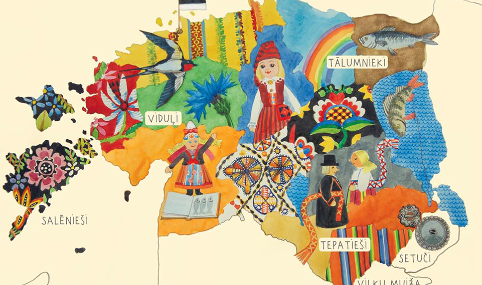
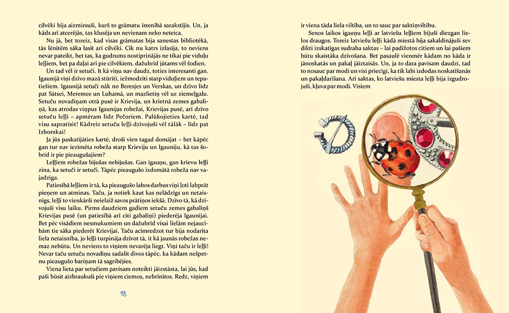

Children’s literature
Kus mul patarei!

How Estonian dolls escaped to Latvia
Folklore researcher Sanita Reinsone’s book grew out of conversations with her children during summers in northern Vidzeme and visits to Estonia. It is written as a storyteller’s account of legendary events: a tale that interprets reality through fairy-tale techniques, freely combining knowledge and imagination. In this story, Estonia and Latvia, where much of the action takes place, are lands where the worlds of people and dolls exist side by side. By presenting Estonia as a “land of dolls”, the author introduces children to the regions, language and traditions of Latvia’s real neighbouring country.


Illustrations: Kristīne Jurjāne